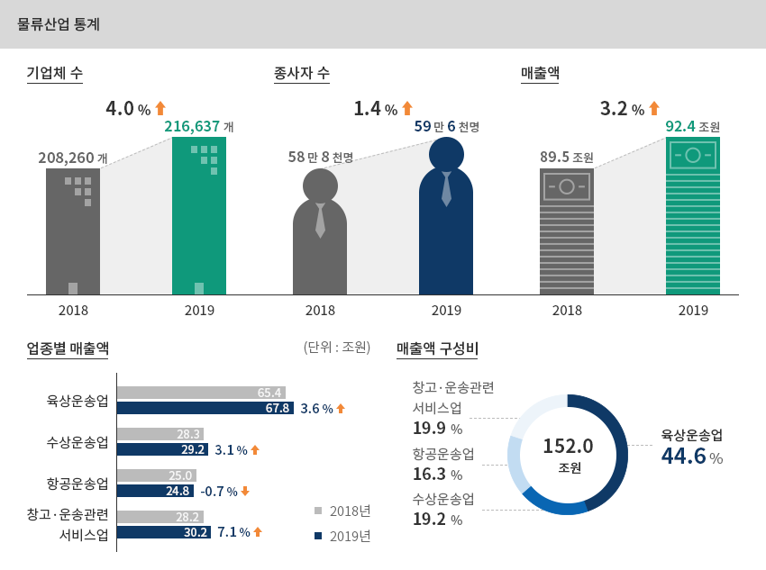

물류
- Home
- Why KOREA
- 산업
- 물류
물류
Logistics
-
넓고, 빠르게 연결되는 한국 물류의 확장성 내용닫기넓고, 빠르게 연결되는 한국 물류의 확장성한국은 세계 2위 환적항인 부산항만과 세계 3위 항공화물 운송인 인천공항을 보유하고 있으며,
수출입에 필요한 소요시간이 빠르고 비용이 낮아 기업의 무역 활동에 용이하다"한국의 주요 물류 인프라" ※ 출처 : Busan Port Authority(2020)
※ 출처 : Busan Port Authority(2020)
※ 출처 : 세계공항협의회 (ACI) (2020)"한국의 수출입 소요 시간 및 비용"소요시간(시간당)한국의 수출입 소요시간 표로 국가, 수출, 수입 정보제공 국가 수출 수입 한국(fast) 13 6 중국 18 37 싱가포르 10 33 일본 27 48 소요비용(달러당)한국의 수출입 비용 표로 국가, 수출, 수입 정보제공 국가 수출 수입 한국(fast) 185 315 중국 249 230 싱가포르 335 220 일본 241 275
※ 출처 : World Bank Group “Doing Business 2020 Report” -
항공 및 수상운송업 위주의 한국 성장세 지속 내용열기항공 및 수상운송업 위주의 한국 성장세 지속한국의 물류산업은 2000년대 이전까지 경제의 고도성장과 수출중심 경제구조로 인해 양적으로 급성장하였으며,
2000년대 들어와 중국시장의 부상과 정부의 물류인프라 투자(인천공항 및 부산신항, 내륙물류기지 등)에 힘입어 질적으로도
성장하였다. 협소한 국토 공간과 북한으로 인한 아시아대륙과의 육로 단절로 국내물류의 경우 화물자동차운송시장이 전담하고 있고,
철도화물시장은 극히 미약한 구조를 가지고 있다. 반면 국제물류는 해운과 항공이 전담하고 있고, 철도이용은 전무하다.3면이 바다이고 중국과 일본 사이에 위치한 지정학적 입지와 수출주도형 경제에 힘입어 수도권(인천항, 인천공항)과
부산권(부산항) 중심의 국제물류산업이 발달하였으며, 수도권-부산권 물류벨트에는 교통망 외에 공·항만-내륙물류기지 등
물류인프라가 집중 입지하고 있다.2019년 기준 한국의 물류산업은 기업수, 종사자수, 매출액 모두 전년대비 증가하였다. 기업체수는 21만 7천개,
종사자수는 59만 6천명, 매출액은 92조 4천억원으로 나타났으며, 생활물류 등 물동량 증가와 이에 따른 물류시설 확충,
물류관련 정보시스템 구축 등으로 기업체수(4.0%), 종사자수(1.4%), 매출액(3.2%) 모두 증가한 것으로 나타났다. 화물운송업은
전년대비 기업체수(4.3%↑), 종사자수(2.6%↑), 매출액(2.3%↑) 모두 증가하였으며, 물류시설 운영업은 기업체수(0.4%↑),
종사자수(2.5%↑), 매출액(4.4%↑) 모두 증가, 물류관련 서비스업 기업체수(1만 2천개) 및 종사자수(8만 5천명)는
각각 0.2%, 6.0% 감소한 반면, 매출액(17.1조원)은 5.2% 증가한 것으로 나타났다."한국 물류산업 현황"물류산업 통계- 기업체 수 - 2018(208,260개) → 2019(216,637개) 4.0% 상승
- 종사자 수 - 2018(58만 8천명) → 2019(59만 6천명) 1.4% 상승
- 매출액 - 2018(89.5조원) → 2019(92.4조원) 3.2% 상승
-
업종별 매출액
- 육상운송업 - 2018(65.4) → 2019(67.8) 3.6% 상승
- 수상운송업 - 2018(28.3) → 2019(29.2) 3.1% 상승
- 항공운송업 - 2018(25.0) → 2019(24.8) -0.7% 하락
- 창고·운송관련 서비스업 - 2018(28.2) → 2019(30.2) 7.1% 상승
-
매출액 구성비(152.0조원)
- 육상운송업 44.5%
- 수상운송업 19.2%
- 항공운송업 16.3%
- 창고·운송관련 서비스업 19.9%
※ 자료 : 통계청, 보도자료 2019년 기준 운수업조사 결과(잠정)(물류산업통계 포함), 2020.12.8 -
다양한 형태의 한국 內 물류 비즈니스 추진 내용열기다양한 형태의 한국 內 물류 비즈니스 추진2020년 기준 한국의 물류·유통 산업부문에서의 외국인 직접투자는 18억 3,117만 달러이며, 전년 대비 운수창고(물류) 분야의
외국인 직접투자는 38.7% 증가하였다. 이 중 92% 가량이 그린필드형 투자로 시행되었으며, 홍콩, 미국, 중국, 싱가포르, 독일,
아랍에미레이트 등 다양한 국가에서 한국으로 진출하였다.2020년 기준 한국의 물류산업부문(운수·창고)에서의 외국인직접투자규모는 총 44건에 632백만달러 수준이며,
최근 7년간 총유치금액은 3,154 백만달러에 달하고 있다. 외국인직접투자는 국내외 경기 외에도 주변 경쟁국의
투자유치환경(정책, 시설, 시장규모 등)에 영향을 받는다는 점에서 투자규모는 다소간의 등락현상을 나타내고 있다.
과거 2011~2013년의 경우 66~143백만달러 수준으로 낮았지만 최근 7년간을 보면 3~6억불 수준으로 크게 증가하였고
같은 수준에서 안정화 추세가 뚜렷한 것으로 나타났으며, 투자유형에 따른 투자규모(신고금액 기준)를 보면
‘M&A’형이 17%인 데 비해 ‘그린필드’형이 83%로 절대적 비중을 차지하고 있다.
-
물류산업 외국인직접투자 현황 내용열기물류산업 외국인직접투자 현황"물류(운수ㆍ창고) 산업 외국인직접투자 현황(신고기준)"(단위: 건, 천USD)
물류(운수ㆍ창고) 산업 외국인직접투자 현황(신고기준) 표로 구분, 년도, 계 정보제공 구분 2014 2015 2016 2017 2018 2019 2020 계 투
자
규
모건
수전체 53 81 59 57 58 52 44 404 1백만불미만 38 57 44 36 40 30 30 275 1백만불 ~
1천만불미만11 18 10 21 13 17 4 94 1천만불 ~
1억불미만3 5 4 1 4 4 8 29 1억불이상 1 2 1 2 1 1 2 10 금
액전체 412,051 667,334 349,090 294,100 344,345 455,763 632,296 3,154,979 1백만불미만 26,331 25,851 20,510 17,908 15,938 12,713 13,767 133,018 1백만불 ~
1천만불미만56,572 124,817 47,689 110,615 94,767 118,413 20,666 573,548 1천만불 ~
1억불미만261,200 184,000 180,400 54,000 377,986 450,400 430,159 1,938,145 1억불이상 480,000 1,000,000 449,572 405,676 200,000 330,000 800,000 3,665,248 투
자
유
형건
수전체 53 81 59 57 58 52 44 404 M&A 5 10 14 7 4 12 9 61 그린필드 48 71 45 50 54 40 35 343 금
액전체 412,051 667,334 349,090 294,100 344,345 455,763 632,296 3,154,979 M&A 5,568 13,128 299,438 110,136 7,408 15,030 70,855 521,563 그린필드 406,483 654,205 49,652 183,964 336,937 440,733 561,441 2,633,415 ※ 자료 : 산업통상자원부, “외국인투자통계”지난 7년간(2014~2020) 국내 물류산업에 가장 많은 투자(신고금액 기준)를 한 국가는 미국(1,703 백만달러)이며 이어
싱가포르(340 백만달러), 중국(308 백만달러), 네덜란드(247 백만달러), 버진아일랜드(142 백만달러), 홍콩(69 백만달러),
일본(67 백만달러)의 순서를 나타내고 있으며, 국내 물류산업에서 이루어진 전체 투자금액 중 이들 7개국 투자금액이 91.3%의
절대적인 비중을 차지하고 있다.국가별 투자규모를 보면 미국이 2019년부터 2년 연속 300백만달러를 투자하고 있으며, 이어서 중국이 100 백만달러를
투자하고 있는 것으로 나타나고 있다."주요 국가별 국내 물류산업 외국인직접투자 현황(신고기준)"(단위 : 건, 천USD)주요 국가별 국내 물류산업 외국인직접투자 현황(신고기준) 표로 구분, 년도, 계 정보제공 구분 2014 2015 2016 2017 2018 2019 2020 계  미국
미국
신고 건수 5 14 6 10 12 10 7 64 신고 금액 256,142 520,799 6,846 114,935 173,524 305,415 325,824 1,703,485  일본
일본
신고 건수 11 13 12 9 8 2 1 56 신고 금액 12,827 13,325 9,371 18,186 10,240 3,642 235 67,825  중국
중국
신고 건수 10 14 14 11 5 7 7 68 신고 금액 4,628 2,629 6,623 1,613 101,553 90,074 101,061 308,181  홍콩
홍콩
신고 건수 6 8 8 6 6 13 8 55 신고 금액 1,743 46,809 6,216 7,721 1,982 4,031 1,047 69,549  싱가
싱가
포르신고 건수 6 8 5 6 6 5 7 43 신고 금액 9,230 40,125 70,890 105,352 18,920 6,928 89,163 340,608 네덜
란드신고 건수 1 1 1 1 3 0 0 7 신고 금액 870 8,434 224,786 217 13,095 0 0 247,402 버진
아일
랜드신고 건수 2 1 1 4 7 3 0 18 신고 금액 115,600 302 116 9,960 13,007 3,561 0 142,545 ※ 자료 : 산업통상자원부, “외국인투자통계” -
물류혁신 및 신산업창출을 위한 정책 추진 내용열기물류혁신 신산업창출을 위한 정책 추진한국의 물류정책은 “국가물류기본계획(계획기간 : 10년)”에 따라 정책기조와 세부 추진사항이 마련되고 있다.
2021년 7월 발표된 “국가물류기본계획(2021-2030)”에 따르면 한국은 크게 6대 추진전략을 갖고 물류산업 스마트·디지털
혁신 성장과 상생 생태계 조성을 통한 글로벌 물류 선도국가로 도약하고자 한다.비전 - 물류산업 스마트 ㆍ디지털 혁신 성장과 상생 생태계 조성을 통한 글로벌 물류 선도국가 도약목표- 첨단화 및 디지털화
- 사람중심 / 좋은 일자리
- 공유ㆍ연계 융복합 인프라
- 산업 미래 대응력 확보
- 지속가능한환경
- 글로벌 경쟁력 확보
- 물류산업 IT활용지수 : 39.6 → 66.1
- 물류산업 일자리수 : 64.5 → 97만명
- 물류산업 매출액 : 91.9 → 140.7조원
- 국제물류경쟁력지수(LPI) : 25위 → 10위권
- 온실가스 감축 : BAU 대비 29.3% 감축
추진전략- 전략1. 첨단 스마트 기술기반 물류시스템 구축과 디지털 전환 추진
- 전략2. 단절없는 물류 서비스 위한 공유ㆍ연계 인프라 및 네트워크 구축
- 전략3. 사람중심 좋은 일자리 마련과 수요자 관점의 고품질 물류 서비스 창출
- 전략4. 지속가능한 물류산업 환경 조성
- 전략5. 새로운 수요 대응 위한 물류산업 경쟁력 강화 및 체질 개선
- 전략6. 글로벌 경제지도 변화에 따른 전략적 해외 시장 진출
※ 자료: 국토교통부, 국가물류기본계획(2021-2030), 2021.7 -
경제자유구역 및 자유무역지역 중심의 물류 클러스터 내용열기경제자유구역 및 자유무역지역 중심의 물류 클러스터국가물류체계에서 거점 역할을 하는 내륙물류기지와 복합물류터미널은 5대 권역(수도권, 부산권, 중부권, 호남권, 영남권)에
7개소가 운영되고 있다. 화주기업과 전문물류기업의 물류단지는 전국적으로 총 30개소(총 면적 : 1,200만 ㎡)가 지정되어 운영중이다.물류기업은 대부분 관세유보, 조세감면, 기반시설 제공 등의 혜택이 있는 경제자유구역과 자유무역지역을 중심으로 분포해 있다.
2003년 인천을 시작으로 부산ㆍ진해, 광양만권, 경기, 인천, 대구ㆍ경북, 충북, 동해안권, 광주, 울산 등 총 9개가 조성·운영되고 있다.
경제자유구역 내에 6,025개(‘20년 기준)개의 국내외 물류기업 등이 진출하였으며, 국제물류항만이 있는 인천, 부산진해, 광양만권
등에서는 물류업과 클러스터가 형성되어 있다."한국 내 주요 물류 및 항만 입지"- 인천경제자유구역
- 동해안권경제자유구역
- 경기경제자유구역
- 대구경북경제자유구역
- 충북경제자유구역
- 울산경제자유구역
- 광주경제자유구역
- 부산진해경제자유구역
- 광양만권경제자유구역
※ 자료 : 경제자유구역(http://www.fez.go.kr) [바로가기]
※ 자료협조 : 한국교통연구원


Invest KOREA담당자
유통/물류 PM
강남훈
서비스산업유치팀
T.+82-2-3460-3285
입지정보 추천
산업단지 정보
[부산광역시 강서구] 부산신항배후국제산업물류도시(1단계)일반산업단지(부산진해경제자유구역)
세부정보 바로가기를 클릭하시면 산업단지공단의 Smart K-Factory 서비스의 해당 정보 화면으로 이동합니다.
-
단지명부산신항배후국제산업물류도시(1단계)일반산업단지(부산진해경제자유구역)
-
최초지정일2010.03.03
-
지정면적(km2)5,707,591
-
관리기관부산진해경제자유구역청
-
인근철도역부산역
-
역과 거리(km)26
-
인근공항김해국제공항
-
공항과의 거리(km)19
-
공업용수 공급용량(톤/일)20479(㎥/일)
-
소속 기초 지자체부산광역시 강서구
-
인구수(명)3,401,078
산업단지 정보
[인천광역시 부평구] 한국수출(부평지구)
세부정보 바로가기를 클릭하시면 산업단지공단의 Smart K-Factory 서비스의 해당 정보 화면으로 이동합니다.
-
단지명한국수출(부평지구)
-
최초지정일1965.06.16
-
지정면적(km2)609,361
-
관리기관한국산업단지공단
-
인근철도역부평역
-
역과 거리(km)5
-
인근공항김포국제공항
-
공항과의 거리(km)14
-
공업용수 공급용량(톤/일)384000(㎥/일)
-
소속 기초 지자체인천광역시 부평구
-
인구수(명)2,943,491
산업단지 정보
[인천광역시 서구, 남구, 부평구] 한국수출(주안지구)
세부정보 바로가기를 클릭하시면 산업단지공단의 Smart K-Factory 서비스의 해당 정보 화면으로 이동합니다.
-
단지명한국수출(주안지구)
-
최초지정일1969.08.05
-
지정면적(km2)1,176,829
-
관리기관한국산업단지공단
-
인근철도역부평역
-
역과 거리(km)7
-
인근공항김포국제공항
-
공항과의 거리(km)25
-
공업용수 공급용량(톤/일)250000(㎥/일)
-
소속 기초 지자체인천광역시 서구, 남구, 부평구
-
인구수(명)2,943,491
산업단지 정보
[충청북도 음성군] 오선산업단지
세부정보 바로가기를 클릭하시면 산업단지공단의 Smart K-Factory 서비스의 해당 정보 화면으로 이동합니다.
-
단지명오선산업단지
-
최초지정일2014.04.11
-
지정면적(km2)459,481
-
관리기관충청북도 음성군
-
인근철도역음성역
-
역과 거리(km)19
-
인근공항청주국제공항
-
공항과의 거리(km)43
-
공업용수 공급용량(톤/일)871(㎥/일)
-
소속 기초 지자체충청북도 음성군
-
인구수(명)94,179
산업단지 정보
[경기도 의왕시] 의왕테크노파크
세부정보 바로가기를 클릭하시면 산업단지공단의 Smart K-Factory 서비스의 해당 정보 화면으로 이동합니다.
-
단지명의왕테크노파크
-
최초지정일2016.12.28
-
지정면적(km2)158,708
-
관리기관경기도 의왕시
-
인근철도역수원역
-
역과 거리(km)10
-
인근공항김포국제공항
-
공항과의 거리(km)39
-
공업용수 공급용량(톤/일)754(㎥/일)
-
소속 기초 지자체경기도 의왕시
-
인구수(명)162,751
산업단지 정보
[강원도 동해시] 북평제2일반산업단지
세부정보 바로가기를 클릭하시면 산업단지공단의 Smart K-Factory 서비스의 해당 정보 화면으로 이동합니다.
-
단지명북평제2일반산업단지
-
최초지정일2013.10.14
-
지정면적(km2)598,964
-
관리기관강원도 동해시
-
인근철도역추암역
-
역과 거리(km)1
-
인근공항양양국제공항
-
공항과의 거리(km)93
-
공업용수 공급용량(톤/일)2,153(㎥/일)
-
소속 기초 지자체2,153
-
인구수(명)90,548